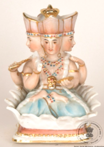

🔇 Is bhasha me is vastu ka audio abhi uplabdh nahi hai.
8. CS - I - 318: भगवान ब्रह्मा की मूर्ति

8. CS - I - 318
यह चित्रित चीनी मिट्टी की मूर्ति भगवान ब्रह्मा की है, जो सफेद कमल पर बैठे हैं। हिंदू मिथक कथाओं में, भगवान ब्रह्मा को सृष्टि और सभी प्राणियों का रचयिता माना जाता है। वे तीन प्रमुख देवताओं (त्रिमूर्ति) में से एक हैं, जिनमें विष्णु पालनकर्ता और शिव संहारक हैं। ब्रह्मा का संबंध सृष्टि, ज्ञान और वेदों से है। उन्हें अक्सर चार मुखों वाला दर्शाया जाता है, जो चार दिशाओं और चार वेदों का प्रतीक है। उन्हें अक्सर कमल के फूल पर बैठे दिखाया जाता है, जो पवित्रता और सृष्टि का प्रतीक है। उनका वाहन हंस या हंसारू है, जो विभिन्न लोकों के बीच यात्रा करने की उनकी क्षमता का प्रतिनिधित्व करता है। उन्हें अक्सर हाथ में ताड़पत्रियों का बंडल (वेद) पकड़े दिखाया जाता है। यह ब्रह्मा की मूर्ति भारत की है और 20वीं सदी की मानी जाती है।
8. CS - I - 318: Figure of Lord Brahma
8. CS - I - 318
This painted porcelain figure is of Lord Brahma, seated on a white lotus. In Hindu mythology Lord Brahma is regarded as the creator of the universe and of all living beings. He is one of the three principal deities (the Trimurti), in which Vishnu is the preserver and Shiva the destroyer. Brahma is associated with creation, knowledge and the Vedas. He is often depicted with four faces, symbolising the four directions and the four Vedas. He is usually shown seated on a lotus flower, a symbol of purity and creation. His vehicle is the swan or hamsa, representing his ability to travel between the various worlds. He is often shown holding a bundle of palm leaves (the Vedas) in his hand. This figure of Brahma is from India and is believed to date to the 20th century.
8. CS - I - 318: బ్రహ్మ దేవుడి బొమ్మ
8. CS - I - 318
ఈ బొమ్మ 20వ శతాబ్దానికి చెందిన భారతీయ కళాఖండం. ఇది రంగులు వేసిన పింగాణీబొమ్మ. ఇందులో బ్రహ్మ దేవుడు, తెలుపు కమలం (white lotus) పై ఆసీనుడై ఉన్నాడు. హిందూ పురాణాలలో బ్రహ్మ దేవుడు విశ్వం మరియు సకల జీవుల సృష్టికర్తగా పరిగణించబడతాడు, త్రిమూర్తులలో (విష్ణువు - సంరక్షకుడు, శివుడు - లయకారుడు) ఈయన ఒకరు. బ్రహ్మ సృష్టి, జ్ఞానం మరియు వేదాలకు సంబంధించినవాడు. ఈయన తరచుగా నాలుగు ముఖాలతో (నాలుగు దిశలు మరియు నాలుగు వేదాలకు ప్రతీకగా) చూపబడతాడు. పవిత్రత మరియు సృష్టికి చిహ్నంగా కమలంపై కూర్చుని ఉన్న ఈయన వాహనం హంస ఇది లోకాల మధ్య ప్రయాణించగలిగే శక్తిని సూచిస్తుంది. ఈయన చేతిలో తరచుగా తాళపత్రాల (వేదాల) ఒక కట్ట కనిపిస్తుంది.
7. XLII - 48: யானை, யானைப்பாகன் மற்றும் ஒரு அரசகுடியினர் (AN ELEPHANT, MAHOUT, A NOBLE MAN)
7. XLII - 48
வண்ணம்பூசப்பட்டபீங்கானால்உருவாக்கப்பட்டபிரம்மதேவன்வெள்ளைத்தாமரையின்மேல்அமர்ந்தநிலையில்சித்தரிக்கப்பட்டுள்ளார். இந்துபுராணங்களில்பிரம்மாஉலகத்தையும்அனைத்துஉயிர்களையும்படைத்தகடவுளாகக்கருதப்படுகிறார். அவர்விஷ்ணுமற்றும்சிவனுடன்சேர்ந்துஇந்துமதத்தின்மூன்றுமுக்கியதெய்வங்களாகக்கருதப்படும் ‘மும்மூர்த்தி’யில்ஒருவராகஉள்ளார்; இதில்விஷ்ணுகாப்பவராகவும், சிவன்அழிப்பவராகவும்கருதப்படுகின்றனர்.பிரம்மாபடைப்பு, அறிவுமற்றும்வேதங்களுடன்தொடர்புடையவர். அவர்பொதுவாகநான்குமுகங்களுடன்சித்தரிக்கப்படுகிறார்; அவைநான்குதிசைகளையும்நான்குவேதங்களையும்குறிக்கின்றன. மேலும்தூய்மையையும்படைப்பையும்குறிக்கும்தாமரையின்மேல்அமர்ந்திருப்பதுபோலவும்காணப்படுகிறார்.அவரதுவாகனம்அன்னம் (ஹம்சா) ஆகும்; இதுஉலகங்களுக்குஇடையேசெல்லும்அவரதுதிறனைகுறிக்கிறது. சிலசித்திரங்களில்அவர்கையில்வேதங்களைகுறிக்கும்பனைஓலையைஏந்தியவாறுகாணப்படுகிறார்.
8. CS - I - 318: भगवान ब्रह्मदेवाची मूर्ती
8. CS - I - 318
ही रंगवलेली चिनीमातीची मूर्ती भगवान ब्रह्मदेवाची असून ते पांढऱ्या कमळावर बसले आहेत. हिंदू पुराणकथांमध्ये भगवान ब्रह्मदेव हे सृष्टीचे आणि सर्व प्राणिमात्रांचे निर्माते मानले जातात. ते त्रिमूर्तीतील एक प्रमुख देव आहेत; त्यात विष्णू पालनकर्ते आणि शिव संहारक आहेत. ब्रह्मदेवाचा संबंध सृष्टी, ज्ञान आणि वेदांशी आहे. त्यांना अनेकदा चार मुखांसह दाखवले जाते, जे चार दिशा व चार वेदांचे प्रतीक आहे. त्यांना बहुधा कमळाच्या फुलावर बसलेले दाखवले जाते, जे पावित्र्य व सृष्टीचे प्रतीक आहे. त्यांचे वाहन हंस आहे, जे विविध लोकांमध्ये प्रवास करण्याच्या त्यांच्या क्षमतेचे प्रतिनिधित्व करते. त्यांना अनेकदा हातात ताडपत्रांचा गठ्ठा (वेद) धरलेले दाखवले जाते. ही ब्रह्मदेवाची मूर्ती भारताची असून २०व्या शतकातील मानली जाते.
8. CS-I-318: സൃഷ്ടികർത്താവായ ബ്രഹ്മാവ്
8. CS-I-318
8. CS-I-318: സൃഷ്ടികർത്താവായ ബ്രഹ്മാവ്
8. CS-I-318: ಫಿಗರ್ ಆಫ್ಲಾರ್ಡ್ ಬ್ರಹ್ಮ
8. CS-I-318
ಬಿಳಿ ಕಮಲದ ಮೇಲೆ ಆಸೀನರಾಗಿರುವ, ಬಣ್ಣ ಬಳಿದ ಪಿಂಗಾಣಿಯ ಬ್ರಹ್ಮ ದೇವರ ಶಿಲ್ಪ ಕಲಾಕೃತಿ ಇದು. ಹಿಂದೂ ಪುರಾಣಗಳ ಪ್ರಕಾರ, ಬ್ರಹ್ಮ ದೇವರನ್ನು ಬ್ರಹ್ಮಾಂಡ ಹಾಗೂ ಸಮಸ್ತ ಜೀವರಾಶಿಗಳ ಸೃಷ್ಟಿಕರ್ತ ಎಂದು ಪರಿಗಣಿಸಲಾಗಿದೆ. ಇವರು ರಕ್ಷಕನಾದ ವಿಷ್ಣು ಮತ್ತು ಲಯಕಾರಕನಾದ ಶಿವನ ಜೊತೆಗೆ ಪ್ರಮುಖ ತ್ರಿಮೂರ್ತಿಗಳಲ್ಲಿ ಒಬ್ಬರಾಗಿದ್ದಾರೆ. ಬ್ರಹ್ಮ ದೇವರು ಸೃಷ್ಟಿ, ಜ್ಞಾನ ಮತ್ತು ವೇದಗಳ ಸಂಕೇತವಾಗಿದ್ದಾರೆ. ನಾಲ್ಕು ದಿಕ್ಕುಗಳು ಮತ್ತು ನಾಲ್ಕು ವೇದಗಳನ್ನು ಪ್ರತಿನಿಧಿಸುವ ಅವರ ನಾಲ್ಕು ಮುಖಗಳೊಂದಿಗೆ ಅವರನ್ನು ಹೆಚ್ಚಾಗಿ ಚಿತ್ರಿಸಲಾಗುತ್ತದೆ. ಪಾವಿತ್ರ್ಯತೆ ಮತ್ತು ಸೃಷ್ಟಿಯನ್ನು ಸಂಕೇತಿಸುವ ಕಮಲದ ಹೂವಿನ ಮೇಲೆ ಅವರು ಕುಳಿತಿರುವಂತೆ ಹೆಚ್ಚಾಗಿ ತೋರಿಸಲಾಗುತ್ತದೆ. ಅವರ ವಾಹನವು ಹಂಸವಾಗಿದ್ದು, ಇದು ವಿವಿಧ ಲೋಕಗಳ ನಡುವೆ ಸಂಚರಿಸುವ ಅವರ ಸಾಮರ್ಥ್ಯವನ್ನು ಪ್ರತಿನಿಧಿಸುತ್ತದೆ. ಅವರು ತಾಳೆಗರಿಗಳ ಕಟ್ಟುಗಳನ್ನು ಹಿಡಿದಿರುವಂತೆ ಹೆಚ್ಚಾಗಿ ಚಿತ್ರಿಸಲಾಗುತ್ತದೆ. ಭಾರತದಲ್ಲಿಯೇ ರೂಪುಗೊಂಡಿರುವ ಬ್ರಹ್ಮ ದೇವರ ಈ ಕಲಾಕೃತಿಯು 20ನೇ ಶತಮಾನದಷ್ಟು ಹಳೆಯದಾಗಿದೆ.
8. CS-1 -318: ଭଗବାନ ବ୍ରହ୍ମାଙ୍କ ମୂର୍ତ୍ତି
8. CS-1 -318
ଶ୍ଵେତ କମଳ ଉପରେ ବସିଥିବା ଭଗବାନ ବ୍ରହ୍ମାଙ୍କର ଏହା ଏକପ୍ରୋକ୍ଲେନ୍ ନିର୍ମିତ ପ୍ରତିମା। ହିନ୍ଦୁ ପୌରାଣିକ କାହାଣୀଅନୁସାରେ, ଭଗବାନ ବ୍ରହ୍ମାଙ୍କୁ ବ୍ରହ୍ମାଣ୍ଡ ଏବଂ ସମସ୍ତ ପ୍ରାଣୀଙ୍କର ସୃଷ୍ଟିକର୍ତ୍ତା ବୋଲି ବିବେଚନା କରାଯାଏ। ଭଗବାନ ବିଷ୍ଣୁଙ୍କ ସହିତ ତିନି ପ୍ରମୁଖ ଦେବତା (ତ୍ରିମୂର୍ତ୍ତି) ମଧ୍ୟରୁ ସେ ହେଉଛନ୍ତି ଜଣେ,ଭଗବାନ ବିଷ୍ଣୁ ହେଉଛନ୍ତି ପାଳନକର୍ତ୍ତା ଏବଂ ଶିବ ହେଉଛନ୍ତି ବିନାଶକର୍ତ୍ତା। ବ୍ରହ୍ମାଙ୍କୁ ସୃଷ୍ଟି, ଜ୍ଞାନ ଏବଂ ବେଦ ସହିତ ସଂଶ୍ଳିଷ୍ଟ କରାଯାଇଛି। ତାଙ୍କୁ ପ୍ରାୟତଃ ଚାରୋଟି ମୁଖ ସହିତ ଚିତ୍ରିତ କରାଯାଇଥାଏ, ଯାହା ଚାରି ଦିଗ ଏବଂ ଚତୁର୍ବେଦକୁ ପ୍ରତିକୀତ କରିଥାଏ। ତାଙ୍କୁ ସାଧାରଣତଃ ପଦ୍ମ ଫୁଲ ଉପରେ ଆସନାରୂଢ଼ ସ୍ଥିତିରେ ଚିତ୍ରିତ କରାଯାଇଛି, ଯାହା ପବିତ୍ରତା ଏବଂ ସୃଜନତାର ପ୍ରତୀକ ଅଟେ। ତାଙ୍କର ବାହନ ହେଉଛି ହଂସ, ଯାହାଦ୍ୱାରା ସେ ବିଶ୍ୱ ମଧ୍ୟରେ ଭ୍ରମଣ କରିବାର କ୍ଷମତାକୁ ପ୍ରତିନିଧିତ୍ୱ କରିଥାନ୍ତି। ତାଙ୍କ ହସ୍ତରେ ତାଳପତ୍ରର ଏକ ଗଣ୍ଠି (ବେଦ) ରହିଥିବାର ଦେଖାଯାଏ। ବ୍ରହ୍ମାଙ୍କ ଏହି ପ୍ରତିମୂର୍ତ୍ତି ଭାରତରୁ ଉତ୍ପନ୍ନ ହୋଇଥିଲା ଏବଂ ଏହା 20ଶ ଶତାବ୍ଦୀର ଅଟେ।
8. CS - I - 318: ভগবান ব্রহ্মার মূর্তি
8. CS - I - 318
সাদা পদ্মের ওপর উপবিষ্ট ভগবান ব্রহ্মার একটি চিত্রিত চীনামাটির (পোরসেলিন) মূর্তি। হিন্দু পৌরাণিক কাহিনীতে, ভগবান ব্রহ্মাকে মহাবিশ্ব এবং সমস্ত জীবের স্রষ্টা হিসেবে বর্ণনা করা হয়।তিনি পালনকর্তা বিষ্ণু এবং সংহারকর্তা শিবের পাশাপাশি তিন প্রধান দেবতা অর্থাৎ ত্রিমূর্তিরঅন্যতম। ব্রহ্মা সৃষ্টি, জ্ঞান এবং বেদের সঙ্গে সম্বদ্ধ। তাকে প্রায়শই চারটি মুখসহ চিত্রিত করা হয়, যা চারটি দিক এবং চারটি বেদেরও প্রতীক। প্রায়শই তাঁকে একটি পদ্মফুলের ওপর উপবিষ্ট অবস্থায়চিত্রিত করা হয়, যা পবিত্রতা এবং সৃষ্টির প্রতীক। তাঁর বাহন হলো হংস বা রাজহাঁস, যা বিভিন্ন জগতের মধ্যে ভ্রমণ করতে পারে। তিনি হাতে একগুচ্ছ তালপাতা অর্থাৎ বেদ ধারণ করে থাকেন। ব্রহ্মার এই মূর্তিটির উৎপত্তি ভারতবর্ষে এবং এটি ২০ শতকের একটি নিদর্শন।
8. سی ایس-I-318: ایکبھگوانبرہماکا مجسمہ
8. سی ایس-I-318
چینی کا پینٹ کیا ہوا مجسمہ، جس میں بھگوان برہما سفید کمل کے پھول پر بیٹھے ہیں۔ ہندو دیومالا میں بھگوان برہما کائنات اور تمام مخلوقات کے خالق کے طور پر مانے جاتے ہیں اور تین اہم دیوتاؤں (ترِمورتی) میں سے ایک ہیں، جن میں وشنو محافظ اور شیو فناکار ہیں۔ برہما تخلیق، علم اور ویدوں سے وابستہ ہیں۔ انہیں اکثر چار چہروں کے ساتھ دکھایا جاتا ہے، جو چار سمتوں اور چار ویدوں کی نمائندگی کرتے ہیں۔ انہیں اکثر کمل کے پھول پر بیٹھا ہوا دکھایا جاتا ہے، جو پاکیزگی اور تخلیق کی علامت ہے۔ ان کی سواری ہنس یا ہمسا ہے، جو ان کی دنیاوں کے درمیان سفر کرنے کی صلاحیت کی نمائندگی کرتی ہے۔ انہیں اکثر کھجور کے پتے کے گچھے (وید) پکڑے ہوئے بھی دکھایا جاتا ہے۔ یہ برہما کا مجسمہ بھارت سے تعلق رکھتا ہے اور یہ 20ویں صدی کا ہے۔
8. સીએસ-I-318: ભગવાન બ્રહ્માની આકૃતિ
8. સીએસ-I-318
સફેદ કમળ પર બિરાજમાન ભગવાન બ્રહ્માની ચિત્રિત પોર્સેલેઇન મૂર્તિ. હિંદુ પુરાણોમાં, ભગવાન બ્રહ્માને બ્રહ્માંડ અને સર્વ પ્રાણીઓના સર્જનહાર માનવામાં આવ્યા છે. તેઓ ત્રણ મુખ્ય દેવતાઓ (ત્રિમૂર્તિ)માંના એક છે – જેમાં વિષ્ણુ પાલનહાર છે અને શિવ સંહારક છે. બ્રહ્માનો સંબંધ સર્જન, જ્ઞાન અને વેદ સાથે છે. તેમને ઘણીવાર ચાર મુખ સાથે દર્શાવવામાં આવ્યા છે, જે ચાર દિશાઓ અને ચાર વેદોનું પ્રતીક છે. તેમને પ્રાયઃ કમળના ફૂલ પર બેઠેલા દર્શાવવામાં આવ્યા છે, જે પવિત્રતા અને સર્જનનું પ્રતીક છે. તેમનું વાહન સ્વાન અથવા હંસ છે, જે વિભિન્ન લોકોમાં યાત્રા કરવાની તેમની ક્ષમતાને દર્શાવે છે. તેમને પ્રાયઃ હાથમાં તાડપત્ર- (વેદોની હસ્તપ્રત) સાથે દર્શાવવામાં આવે છે. બ્રહ્માની આ આકૃતિનો ઉદ્ભવ ભારતમાં થયો છે અને આ 20મી સદીની છે.